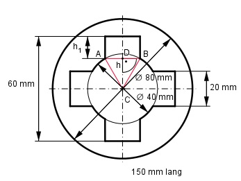

Aufgabe 168 Wie schwer ist der Kupplungsflansch aus Stahl, Dichte 7,85 g/cm3?

Die Strecke AB ist 20 mm lang. A und B liegen auf einem Kreis mit dem Radius 20 mm --> Das Dreieck ABC ist ein gleichseitiges und Teil eines regelmäßigen Sechsecks. DB = 20 mm/2 = 10 mm CB = 20 mm Satz von Pythagoras im Dreieck CBD: CB2 = DB2 + h2 = 102 + h2 |-102 h2 = CB2 - DB2 = 202 - 102 h2 = 300 |√ h = 17,3 mm h1 = 30 mm - h = 30 mm - 17,3 mm = 12,7 mm VFlansch = GFlansch * Länge GFlansch = Kreisfläche mit r = 40 mm - - Kreisfläche mit r = 20 mm - - 4 * Rechteck + + 4 * Kreisabschnitt Kreisfläche mit r = 40 mm = = π * 402 mm2 = 5 024 mm2 Kreisfläche mit r = 20 mm = = π * 202 mm2 = 1 256 mm2 4 * Rechteck = 4 * 20 mm * 12,7 mm = 1 016 mm2 4 * Kreisabschnitt = 60° 20 mm * 17,3 mm = 4 * (π * 202 mm2 * ------ - -----------------) 360° 2 4 * Kreisabschnitt = = 4 * (209,3 mm2 - 173 mm2) = 145,2 mm2 GFlansch = = 5 024 mm2 - 1 256 mm2 - 1 016 mm2 + 145,2 mm2 GFlansch = 2 897,2 mm2 = 28,97 cm2 VFlansch = GFlansch * l 150 mm = 15 cm VFlansch = 28,97 cm2 * 15 cm = 434,55 cm3 mFlansch = VFlansch * 7,85 g/cm3 mFlansch = 434,55 cm3 * 7,85 g/cm3 = 3 411 g